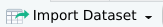

![]()
install.packages('tidyverse')Introdução ao tidyverse
1 Filosofias de código
Como em toda linguagem de programação, respeitando-se a sintaxe, existem diferentes maneiras de se resolver o mesmo problema, e também de escrever código em R.
A escolha da filosofia de cógido ou estilo de código é puramente pessoal. Há quem prefira programar usando o que chamamos de Base R ou R Base. Esse estilo baseia-se em utilizar puramente a sintaxe original da linguagem, não sendo dependente de pacotes que necessitem de constantes atualizações. Porém, esse também é um caminho com uma curva de aprendizado mais elevada para os que nunca tiveram contato com programação.
Uma filosofia alternativa e que hoje tem se tornado cada vez mais o padrão inicial de introdução ao R é o caminho do tidyverse. Um conjunto de pacotes pensado para tornar a vida do usuário de R mais fácil seus códigos mais intuitivos e legíveis.
Se você ainda não instalou este pacote pode usar
E se ainda tem dúvidas de como instalar pacotes no R dá uma olhada aqui..
Se já estiver tudo instalado podemos carregar o nosso pacote com
2 Diretório de Trabalho
O diretório de trabalho é a pasta raiz na qual a sua sessão do R atual está baseada e procurará pelos arquivos de dados, e também aonde salvará arquivos gerados como resultados de alguma função.
Você pode definir o seu diretório de trabalho indo no menu Session > Set Working Directory > Change Directory… ou usar o atalho CTRL + Shift + H. Na janela que aparece a seguir, basta escolher a pasta que deseja utilizar como seu diretório de trabalho.
O passo anterior nada mais é do que uma maneira visual de invocar a função setwd. Esta função recebe como argumento um caminho de diretório e o define como diretório de trabalho.
Atenção com os caminhos de diretório!
Ao definir os caminhos de diretório via código com setwd é importante prestar atenção a como o caminho é definido no seu sistema operacional.
C:\Users\SeuNome\Documents\Projeto
/home/SeuNome/Documentos/Projeto
Note a diferença entre os usos da \ e / nos diferentes sistemas. Qualquer erro na escrita do caminho acarretará em um erro na função já que não será possível encontrar o diretório especificado.
Ao criar diretórios em seu computador evite usar caracteres especiais, nomes longos e espaços. Torne sua vida mais fácil!
3 Projetos em R
Um projeto em R é um arquivo com extensão .Rproj que mantém todos os arquivos em um diretório (scripts, dados, figuras, etc.) em um grupo. Quando criamos um projeto em R automaticamente o nosso diretório de trabalho é definido como a pasta que contém o nosso arquivo .Rproj. Isso facilita o trabalho colaborativo e evita problemas de definição de caminhos de arquivos.
Para criar um novo projeto voce pode acessar o menu File > New Project… ou usar o botão  no canto superior direito do seu RStudio. Para abrir um projeto existente pode acessar File > Open project… e escolher o projeto que deseja abrir.
no canto superior direito do seu RStudio. Para abrir um projeto existente pode acessar File > Open project… e escolher o projeto que deseja abrir.
Quando criamos um projeto temos a opção de criar um novo diretório associado ao projeto, ou podemos usar um diretório já criado previamente e associá-lo a nosso projeto.
Organização é tudo!
Acostume-se a organizar o seu diretório de trabalho criando subdiretórios para armazenar os diferentes arquivos do seu projeto. Você pode por exemplo usar uma pasta para os scripts, uma para os seus dados, outras para os resultados, etc.
4 Entrada de Dados
No R é possível fazer o carregamento de dados nos mais diversos formatos. Os arquivos em formato de texto (.csv,.txt) são os mais compatíveis entre diferentes plataformas. Mas é possível também carregar por exemplo arquivos em formato de planilhas como .xls e .xlsx.
Embora seja possível fazer o carregamento dos arquivos de maneira visual usando o botão  na aba Environment, é recomendado que você se acostume a carregar os seus dados diretamente via script uma vez que em determinadas aplicações você não terá acesso a interface do RStudio para executar um fluxo de análises em um servidor remoto por exemplo.
4.1 Importando arquivos de texto
Para importar um arquivo .csv é preciso ter atenção ao tipo de arquivo. CSV significa Comma Separated Values ou Arquivo separado por vírgulas, entretanto, é comum principalmente no Windows que arquivos .csv sejam gerados utilizando ; como separador de campos.
Para os exemplos a seguir utilizaremos alguns conjuntos de dados de exemplo, no meu setup estes arquivos estão dentro de um diretório chamado data. Podemos usar o comando list.files para visualizar os arquivos disponíveis nessa pasta:
[1] "data_cows.txt" "dietas_galinha.xlsx" "P365.csv"
[4] "P550.csv" "Peso365.csv" "PN.csv" O argumento path informa em qual pasta desejo listar os meus arquivos, se omitirmos esse argumento o comando fará a busca no diretório raiz que está setado como diretório de trabalho na sessão atual.
Você pode consultar qual diretório é o atual de trabalho com o comando getwd:
Vamos importar o arquivo Peso365.csv, este é um arquivo .csv padrão que tem os campos separados por vírgulas. Você pode abrir o arquivo para inspecioná-lo em um editor de texto por exemplo.
No comando acima estamos fazendo a leitura do nosso arquivo e armazenando em um objeto chamado p365. Podemos testar se a nossa importação foi bem sucedida pedindo para exibir as linhas iniciais e finais do nosso arquivo com os comandos head e tail respectivamente.
Animal Pai P365
1 1 A 322
2 2 A 324
3 3 A 321
4 4 A 330
5 5 A 327
6 6 A 325 Animal Pai P365
31 31 F 311
32 32 F 333
33 33 F 317
34 34 F 315
35 35 F 330
36 36 F 318
Perguntar não custa nada!
Lembre-se que você pode pedir ajuda ao R sobre qualquer função.
help(head) help(tail)
Nem todo arquivo de texto é separado por algum caracter especial, alguns utilizam espaços ou tabulações para separar os campos. Agora iremos importar o arquivo data_cows.txt.
Observe que neste caso precisamos informar o argumento header que indica para a função se o nosso arquivo possui um cabeçalho de colunas ou não. Esse é um detalhe importante na hora de importar arquivos no R, uma vez que se não informamos a presença de uma linha de cabeçalho a função criará novos nomes para as colunas e a linha de cabeçalho sera interpretada como uma linha de dados.
animal iron infect weight day
1 A01 NoIron NonInfected 110 122
2 A01 NoIron NonInfected 135 150
3 A01 NoIron NonInfected 150 166
4 A01 NoIron NonInfected 160 179
5 A01 NoIron NonInfected 170 219
6 A01 NoIron NonInfected 175 247 animal iron infect weight day
593 A26 Iron Infected 325 627
594 A26 Iron Infected 325 655
595 A26 Iron Infected 325 668
596 A26 Iron Infected 340 723
597 A26 Iron Infected 335 751
598 A26 Iron Infected 345 7814.2 Importando arquivos de Excel
Para importar arquivos no formato do Excel é necessário a utilização do pacote readxl. Se não tiver instalado faça a instalação:
Uma vez instalado podemos carregaro pacote e fazer a importação do nosso arquivo dietas_galinhas.xslx.
# A tibble: 6 × 6
rep `Dieta A` `Dieta B` `Dieta C` `Dieta D` `Dieta E`
<dbl> <dbl> <dbl> <dbl> <dbl> <dbl>
1 1 179 309 243 423 368
2 2 160 229 230 340 390
3 3 136 181 248 392 379
4 4 227 141 327 339 260
5 5 217 260 329 341 404
6 6 168 203 250 226 318# A tibble: 6 × 6
rep `Dieta A` `Dieta B` `Dieta C` `Dieta D` `Dieta E`
<dbl> <dbl> <dbl> <dbl> <dbl> <dbl>
1 1 179 309 243 423 368
2 2 160 229 230 340 390
3 3 136 181 248 392 379
4 4 227 141 327 339 260
5 5 217 260 329 341 404
6 6 168 203 250 226 3185 Alguns comandos úteis
Alguns comandos básicos são bastante úteis para verificar a sanidade dos dados na hora da importação. Se você olhar na sua aba Environment vai perceber que todos os objetos que criamos ao importar os dados agora estão listados.
Podemos visualizar os nossos dados dando um duplo clique sobre o objeto desejado ou usando a função View. Isso abrirá nosso conjunto de dados no visualizador do RStudio.
Atenção!
Cuidado ao tentar visualizar conjuntos de dados muito grandes, isso pode consumir uma quantidade significativa de memória e até mesmo causar uma parada da sua sessão no R.
Alguns outros comandos úteis incluem:
[1] "Animal" "Pai" "P365" tibble [6 × 6] (S3: tbl_df/tbl/data.frame)
$ rep : num [1:6] 1 2 3 4 5 6
$ Dieta A: num [1:6] 179 160 136 227 217 168
$ Dieta B: num [1:6] 309 229 181 141 260 203
$ Dieta C: num [1:6] 243 230 248 327 329 250
$ Dieta D: num [1:6] 423 340 392 339 341 226
$ Dieta E: num [1:6] 368 390 379 260 404 318[1] "data.frame"[1] "tbl_df" "tbl" "data.frame"Percebeu a diferença entre o tipo de objeto p365 e galinhas? O primeiro é do tipo data.frame que é o objeto padrão de tabelas do R. O segundo é do tipo tbl_df que é um tipo especial de data.frame com algumas melhorias. A este tipo de tabela é chamada de tibble, e é o formato padrão de tabelas utilizados pelo pacote tidyverse. A partir daqui comecaremos a utilizar as funções deste pacote, então se ainda não instalou veja o código em Listing 1.
6 Selecionando variáveis
Se ainda não carregou o tidyverse a hora é agora.
── Attaching core tidyverse packages ──────────────────────── tidyverse 2.0.0 ──
✔ dplyr 1.1.4 ✔ readr 2.1.5
✔ forcats 1.0.0 ✔ stringr 1.5.1
✔ ggplot2 3.5.1 ✔ tibble 3.2.1
✔ lubridate 1.9.3 ✔ tidyr 1.3.1
✔ purrr 1.0.2
── Conflicts ────────────────────────────────────────── tidyverse_conflicts() ──
✖ dplyr::filter() masks stats::filter()
✖ dplyr::lag() masks stats::lag()
ℹ Use the conflicted package (<http://conflicted.r-lib.org/>) to force all conflicts to become errorsSeleção de variáveis é uma das tarefas mais triviais na edição de dados. Muitas das vezes precisamos fazer recortes nos dados, ou selecionar um conjunto específico de variáveis ou até mesmo uma única variável para executar operações.
Para isso podemos utilizar a função select que é parte do pacote dplyr, um dos componentes do tidyverse. Vamos relembrar os nomes das nossas colunas no dataset galinhas
# A tibble: 6 × 3
`Dieta A` `Dieta C` `Dieta E`
<dbl> <dbl> <dbl>
1 179 243 368
2 160 230 390
3 136 248 379
4 227 327 260
5 217 329 404
6 168 250 318Observe que na hora de informar as colunas a selecionar eu precisei usar "" já no nome das variáveis existe um espaço sendo usado. Por isso que é sempre recomendado evitar este tipo de nomes de variáveis, quanto mais pudermos facilitar a nossa vida melhor! Mas essa é uma boa oportunidade para apresentar mais um pacote útil.
O pacote janitor é muito útil na hora de realizar tarefas de sanitização de dados. Vamos usar esse pacote para renomear as nossas colunas de uma maneira mais legível e compatível com a sintaxe do R.
Attaching package: 'janitor'The following objects are masked from 'package:stats':
chisq.test, fisher.test# A tibble: 6 × 6
rep dieta_a dieta_b dieta_c dieta_d dieta_e
<dbl> <dbl> <dbl> <dbl> <dbl> <dbl>
1 1 179 309 243 423 368
2 2 160 229 230 340 390
3 3 136 181 248 392 379
4 4 227 141 327 339 260
5 5 217 260 329 341 404
6 6 168 203 250 226 318Percebam que embora tenhamos utilizado a função clean_names nosso conjunto de dados continua o mesmo já que não atualizamos o nosso objeto para fixar as mudanças que fizemos.
Muitas vezes não queremos alterar o nosso objeto original e podemos criar novos objetos, ou simplesmente sobrescrever o objeto antigo com o novo com as mudanças aplicadas. Vamos atualizar o nosso objeto.
# limpando os nomes das colunas e sobrescrevendo o nosso objeto
galinhas <- clean_names(galinhas)
# fazendo novamente a seleção das variáveis agora com
# as colunas renomeadas
select(galinhas,dieta_a, dieta_c,dieta_e)# A tibble: 6 × 3
dieta_a dieta_c dieta_e
<dbl> <dbl> <dbl>
1 179 243 368
2 160 230 390
3 136 248 379
4 227 327 260
5 217 329 404
6 168 250 318Observem que agora que compatibilizamos o nome das nossas colunas o uso de "" não é mais necessário, podemos simplesmente passar pra função o nome das colunas.
6.1 Seleção de intervalos
Em R o caracter : é utilizado para gerar um intervalo. Por exemplo:
Podemos utilizar esse operador também para selecionar intervalos de colunas/variáveis:
# A tibble: 6 × 3
dieta_a dieta_b dieta_c
<dbl> <dbl> <dbl>
1 179 309 243
2 160 229 230
3 136 181 248
4 227 141 327
5 217 260 329
6 168 203 250O tipo de seleção com a função select sempre retorna um data.frame ou uma tibble. Mas podemos também querer acessar os valores de determinada coluna como um vetor. Para isso podemos usar $ para indexar a coluna que quisermos.
A notação $ é do R Base, mas podemos realizar a mesma operação usando a função pull do dplyr.
7 Filtros
A função filter nos permite selecionar subgrupos dos nossos dados baseado em critérios fornecidos. Os filtros podem ser baseados em operadores matemáticos
<menor que>maior que==igual!=diferente
ou pode também usar outras funções condicionais como is.na() que testa se uma variável contém dados faltantes NA, ou between(a,b) que checa se os valores estão em um determinado intevalo definido.
8 Pipe
Em um fluxo de análises é comum realizarmos tarefas sequenciais. O operador Pipe |> nos permite combinar funções em sequência retornando ao final o objeto modificado pela série de operações que realizamos. Isso nos poupa tempo e evita que sejam criados objetos intermediários para armazenar o resultado das diversas operações.
Algumas regras são importantes de se notar:
- O
|>opera da esquerda para a direita, ou seja, o nosso objeto de entrada está sempre a esquerda.
Animal Pai P365
1 1 A 322
2 2 A 324
3 3 A 321
4 4 A 330
5 5 A 327
6 6 A 325- O
|>sempre é o último item em uma linha de código quando quebramos as linhas para tornar a sequência mais legível.
9 Criando ou Modificando Variáveis
A função mutate nos permite modificar uma variável ou criar novas variáveis, sejam elas a partir de novos valores ou derivadas de nossas variáveis originais.
Por exemplo, no dataset p365 a variável P365 está em Kg, podemos criar uma nova variável a partir desta que expresse o peso dos animais em arrobas (1 arroba = 15 Kg)
Animal Pai P365 P365_ARR
1 1 A 322 21.46667
2 2 A 324 21.60000
3 3 A 321 21.40000
4 4 A 330 22.00000
5 5 A 327 21.80000
6 6 A 325 21.66667Por padrão nossas novas variáveis serão incluídas ao final do nosso conjunto de dados, mas este comportamento pode ser modificado passando argumentos para a função. Quer saber como? Dá uma olhada na documentação da função usando ?mutate.
Vale ressaltar mais uma vez que para que as mudanças sejam fixadas, precisamos ou atualizar o nosso conjunto de dados ou criar um novo objeto para salvar estas mudanças.
Duas funções muito úteis que são comumente utilizadas em conjunto com o mutate são case_when e if_else. Estas funções nos permite utilizar filtros ou condições para realizar mudanças no banco de dados. São muito úteis quando precisamos criar novas variáveis como classes, ou alterar observações nos dados que estão dentro de faixas específicas de valores/classes.
Novamente, fique a vontade pra consultar a documentação destas duas funções.
10 Salvando dados
Como mencionado anteriormente, formatos de texto são sempre os mais compatíveis entre plataformas e portanto os mais recomendados.
As funções write_csv e write.table nos permitem salvar arquivos em .csv e em .txt respectivamente. A diferença básica entre os dois é que ao salvar em csv a função padroniza o arquivo separado por vírgulas. Ja em formato texto é possível definir o separador de valores do arquivo.
Importante lembrar que os arquivos serão salvos na pasta raiz do projeto, ou no diretório configurado como diretório de trabalho.
Existe uma função write_delim do pacote readr que é similar a write.table, fique a vontade para explorar a documentação e comparar as características das duas funções.